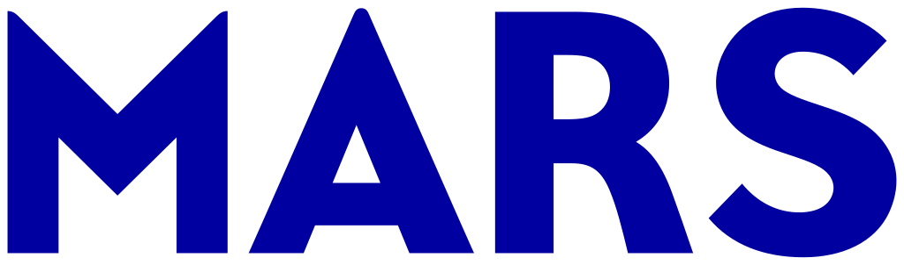
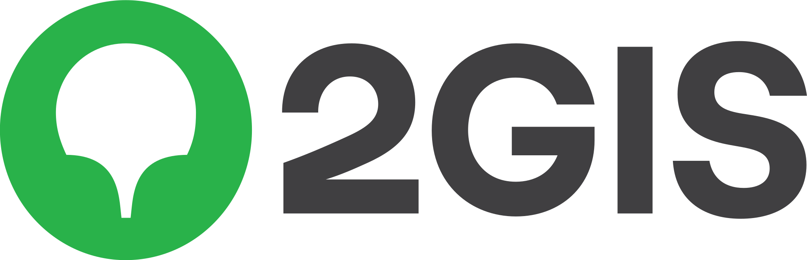
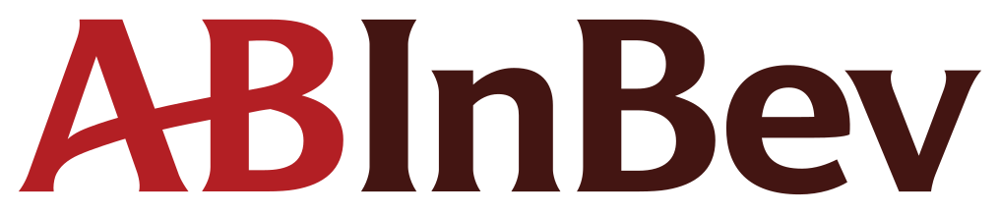
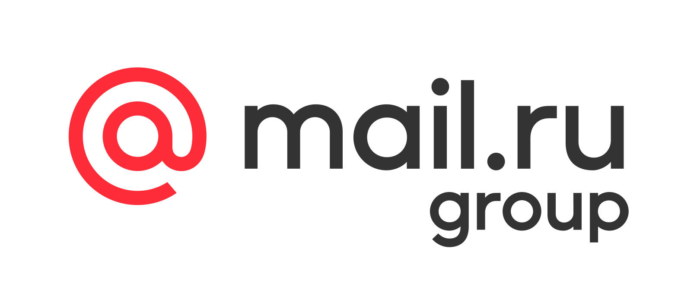
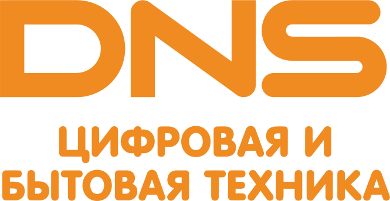
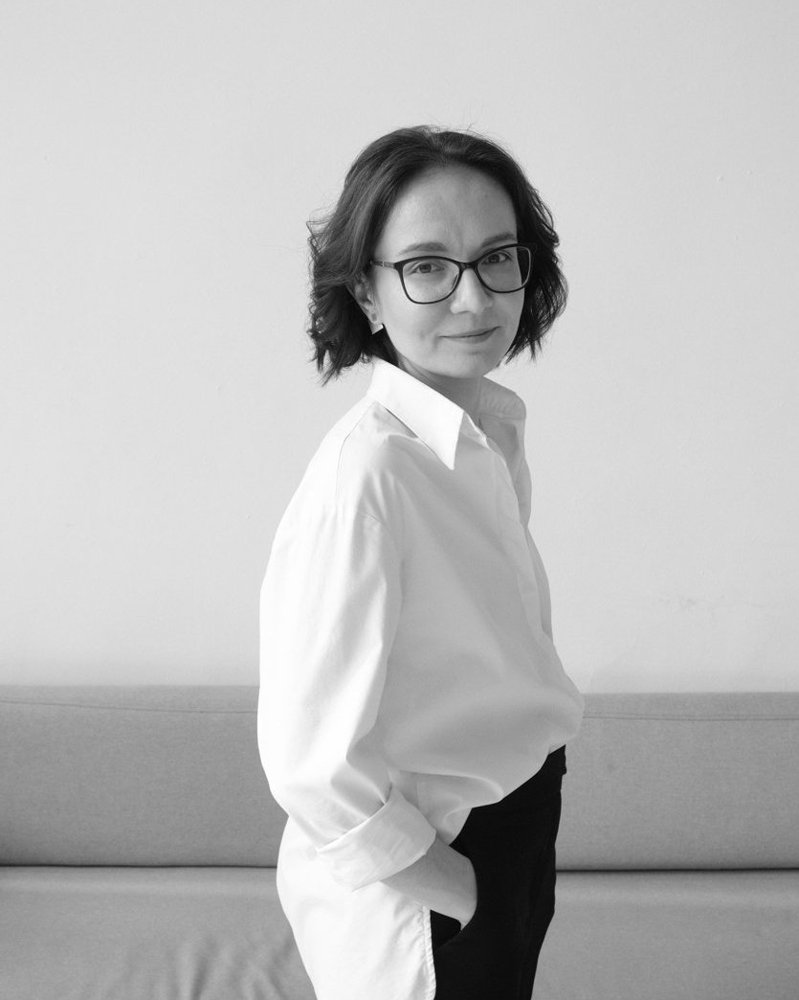
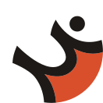

Методика диагностики применяется с 2012 года






ЯндексПравительство МосквыПервый семейныйНовосибирскавтодорРосинсталпроектIQ ConsultancyЭникомСможете увидеть сильные стороны команды и ранние сигналы накопленного напряжения, противоречий и токсичной среды, которые снижают эффективность и создают риски для бизнеса.
4 шага и 10 днейонлайн · анонимно для сотрудников
Если вы HRD крупной компании и вам интересно протестировать инструмент, напишите в личные сообщения — организуем специальный пилот для вас.
Методика диагностики применяется с 2012 года





ЯндексПравительство МосквыПервый семейныйНовосибирскавтодорРосинсталпроектIQ ConsultancyЭникомНакопилось напряжение, непринятые решения и противоречия, которые давно пора решать, но непонятно, с чего начать.
Продуктивность падает. Бонусы, повышение зарплат и программы благополучия работают всё хуже — деньгами и «бантиками» проблему не залить. А внутреннего HR либо нет, либо его экспертиза ограничена рекрутингом и кадрами.
Сделка M&A: понять, что на самом деле происходит с людьми, чтобы не купить кота в мешке и спокойно провести интеграцию.
Люди увольняются, не справляются с работой или теряют мотивацию, а новые инициативы не меняют ситуацию. Руководителю важно увидеть, что мешает команде работать и где искать решение.
Это не просто очередной опрос. В процессе участвует профессиональный эксперт по организационной диагностике — тот уровень HR-экспертизы, который средний бизнес обычно не может себе позволить за разумные деньги. Он видит команду как систему связей и помогает собственнику или топ-менеджерам быстро и ясно разобраться.
Говорим о ваших ожиданиях от команды, целях и амбициях: что вызывает тревогу, где кажется, что «не те люди», какие важные разговоры давно назрели.
Генерируем ссылку для вашей команды и проводим анонимный опрос на специальной платформе. 10–15 минут с любого устройства, без регистрации.
Индекс здоровой среды по 5 факторам, ограничения и возможности команды, ранние сигналы проблем и рассинхрона.
Обсуждаем результаты опроса, сильные стороны команды и узкие места. Помогаем расставить приоритеты в работе с командой, определиться с решениями по людям и составить план конкретных изменений на ближайшее время.
Наш принцип — не добавлять команде лишнего стресса.
«Мы не спрашиваем об удовлетворённости работой и не измеряем индекс счастья или отдельный индекс вовлечённости. Мы спрашиваем о том, что люди чувствуют, но не всегда могут сформулировать. Люди отвечают на вопросы о конкретных ситуациях и поведении — именно так мы измеряем, как они ощущают свою работу в команде и организации в целом.
Базовая методика, на которой основана диагностика, разработана с опорой на исследования McKinsey Organizational Health Index и поведенческие индикаторы вовлечённых команд Gallup. В 2012–2014 годах она доработана на фокус-группах, в живом диалоге с сотнями команд в разных компаниях по России».

Татьяна Чухутинаавтор методикиПропустить ранние сигналы очень легко, а последствия для бизнеса обходятся дорого. Ниже — примеры из расчётов на кейсах наших клиентов.
Директор по организационному развитию, член советов директоров в семейных компаниях, HR-советник по вопросам преемственности и управления талантами.
Во время пилота Татьяна лично проводит все установочные встречи и разборы для тех, кто оставит заявку до 20 октября.
Для прохождения опроса не нужна регистрация: люди нигде не оставляют свои данные и просто отвечают со своего устройства. Мы запускаем опрос только для команд от 5 человек — тогда и вы, и мы видим только общую картину. Если в команде меньше 5 человек, отдельно обсудим с вами, можно ли провести диагностику и в каком формате.
Люди отвечают на вопросы о конкретных ситуациях и поведении — так мы измеряем, как они ощущают свою работу в команде и организации в целом. Например: «Я всегда понимаю, где находятся мои рабочие документы».
Индекс счастья отвечает на вопрос, нравится ли людям здесь работать. Индекс вовлечённости — готовы ли они вкладываться сверх минимума. eNPS — готовы ли они рекомендовать свою компанию друзьям. Индекс здоровой среды показывает, выдерживает ли команда длительный стресс, неопределённость, высокую скорость и давление: ясны ли цели и роли, есть ли доверие, ресурс и готовность меняться. Это не про благополучие за счёт вложений в комфорт, а про продуктивную среду, в которой люди чувствуют себя на своём месте и нужными.
По аналогии с чекапом организма: заметить ранние сигналы будущих проблем, пока их можно решить спокойно и без больших потерь для бизнеса.
Две встречи примерно по часу и рассылка ссылки команде. Всё остальное делаем мы — если нужно, подготовим и текст для рассылки.
Мы не оцениваем отдельных людей — мы оцениваем среду и связи в команде: цели, роли, отношения с руководителем, нагрузку, доверие. Это быстрее, дешевле и не создаёт лишнего напряжения.
Да. При сделке M&A смотрим состояние команды покупаемой компании и помогаем спланировать интеграцию людей. А если вы нанимаете руководителя, который сейчас управляет командой в другой компании, диагностика его команды — косвенная оценка того, умеет ли он быть «щитом» для людей: создавать среду, в которой команда сохраняет продуктивность в условиях стресса и неопределённости.
Методика давно проверена на практике. Новое — только цифровая часть: опрос, отчёт и то, как устроена работа. Участники пилота получают полную диагностику и глубокий профессиональный разбор с экспертом. Нам сейчас нужна обратная связь для дальнейшей доработки продукта. Условия обсуждаем лично. Пилот до 20 октября.
Да. Напишите в личные сообщения в Telegram — организуем специальный пилот для вас.

Заявка — 3 вопроса и одна минута. Напишем в течение дня и договоримся об установочной встрече.